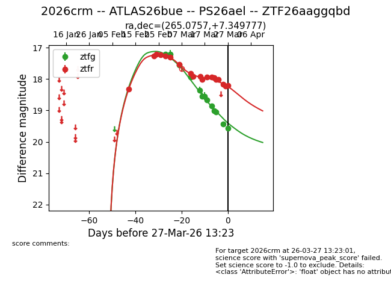
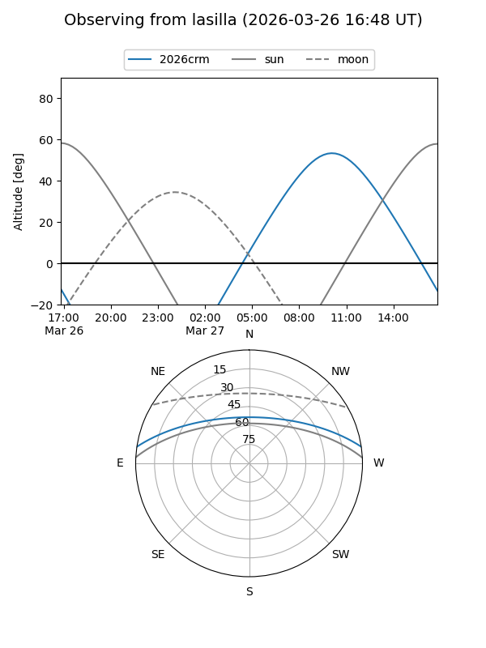
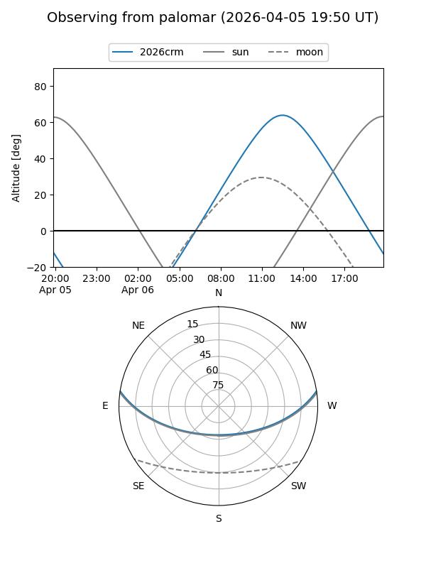
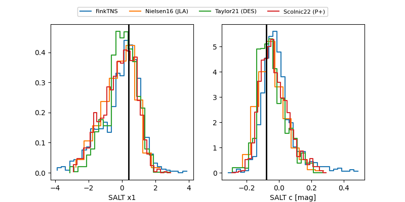

2026crm
Target 2026crm at 2026-03-27 13:25
Aliases and brokers:
FINK: link
Lasair: link
ALeRCE: link
TNS: link
YSE: link
alt names
ZTF26aaggqbd (ztf,fink_ztf)
2026crm (tns,yse)
ATLAS26bue (atlas)
PS26ael (panstarrs)
Coordinates:
equatorial (ra, dec) = 265.0757,+7.34978
equatorial (HMS+DMS) = 17:40:18.16,+07:20:59.20
galactic (l, b) = (31.4597,+19.14284)
Flags:
Photometry:
last ztfg=19.56, ztfr=18.20
13 ztfg, 19 ztfr detections
Lightcurve

Visibility


Additional plots
